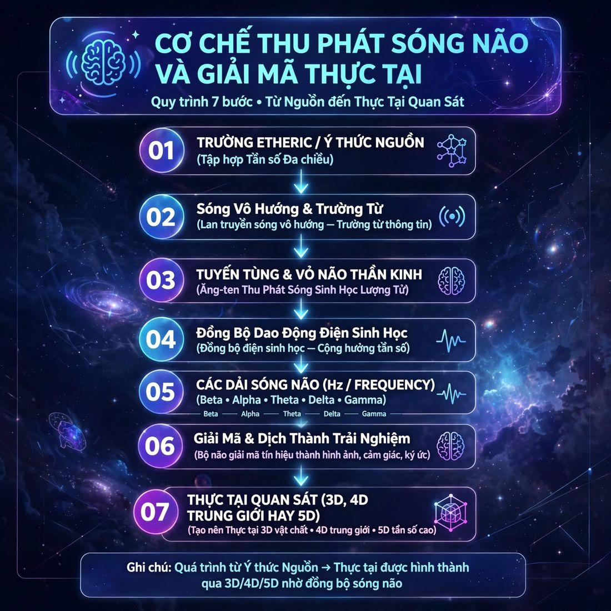
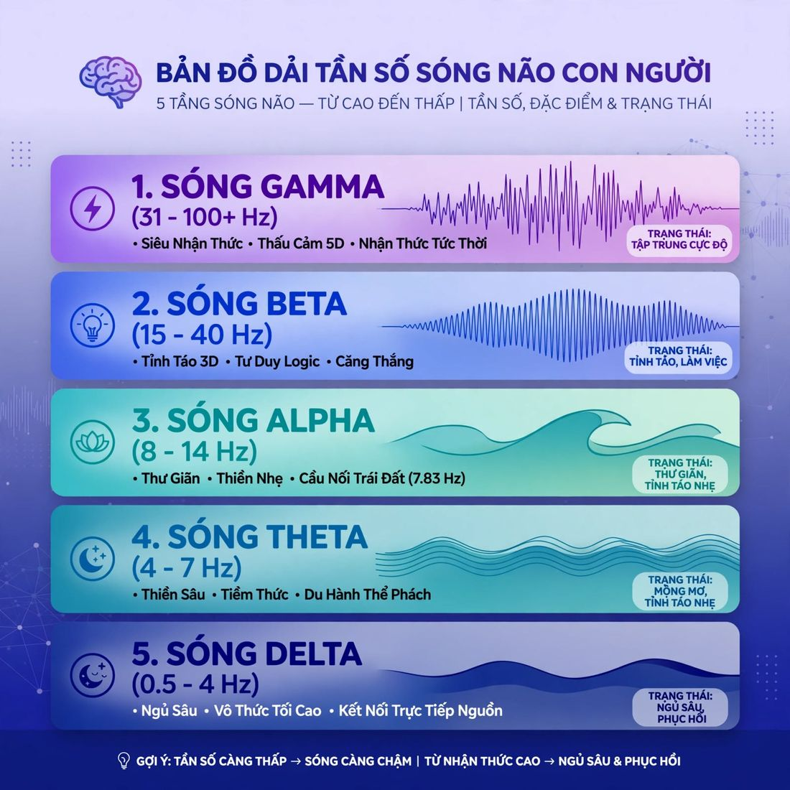
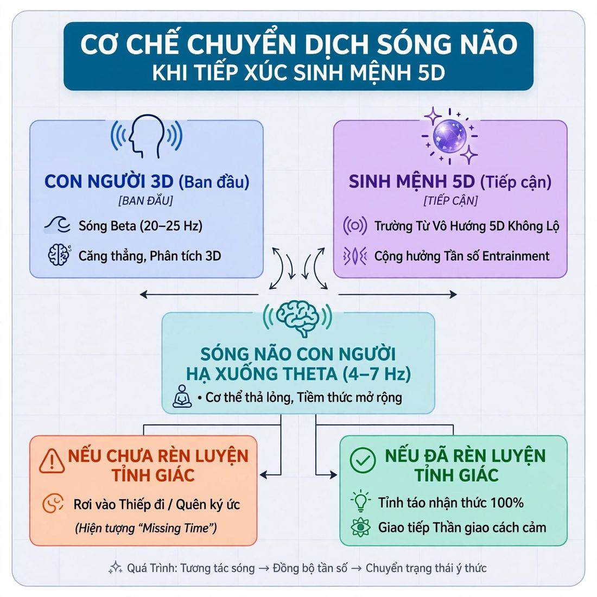
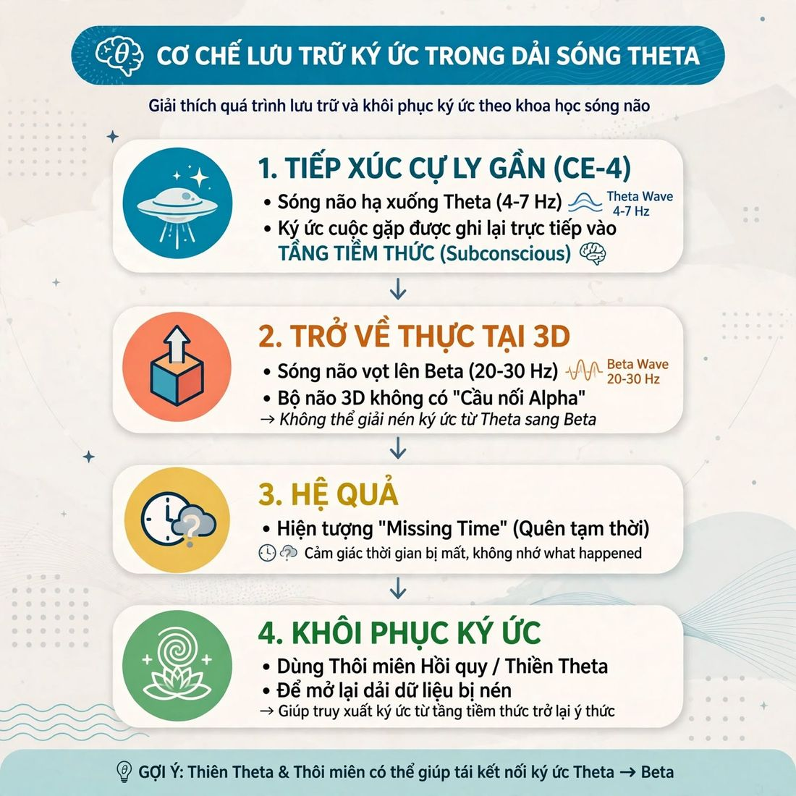
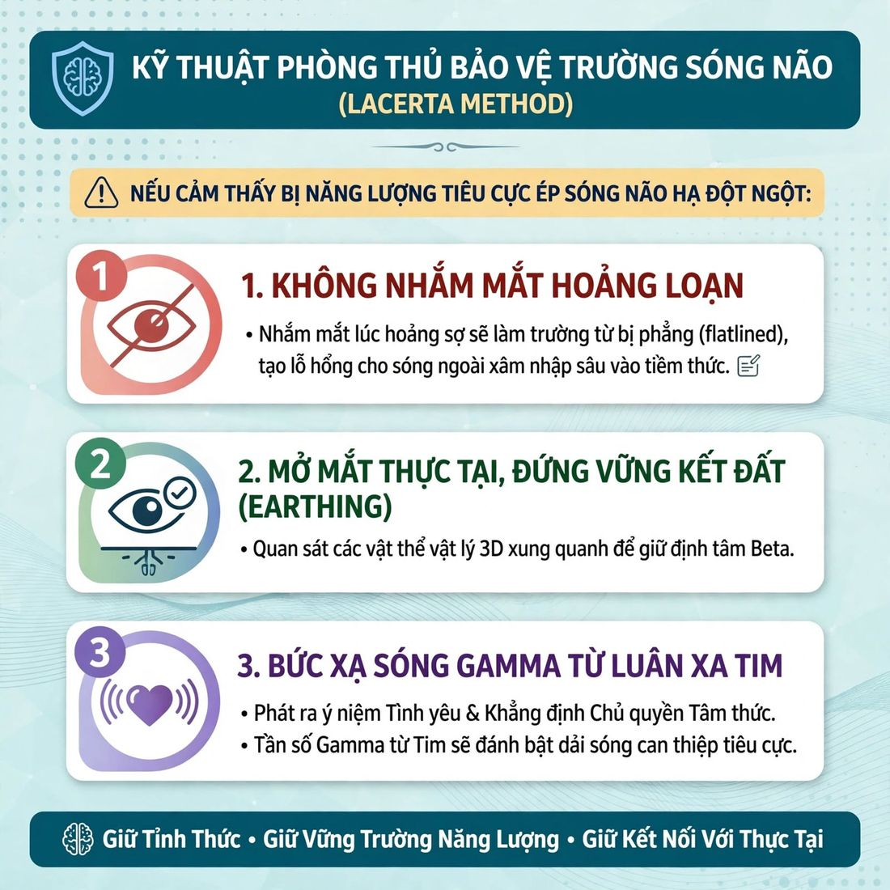
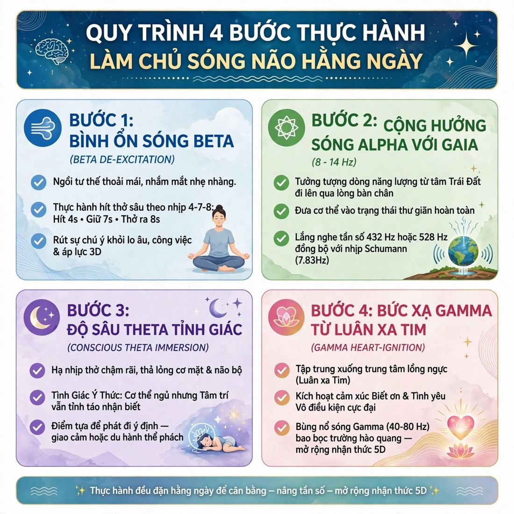

Trang chủ / Chuyên đề 9: Cẩm Nang Tâm Thức Vũ Trụ / Kỳ 84
Chuyên đề 9 · Kỳ 84 / 100
BẢN ĐỒ CÁC DẢI SÓNG NÃO (ALPHA, BETA, THETA, DELTA, GAMMA) VÀ TRẠNG THÁI NGOẠI CẢM

1. Tần Số Sinh Học Thần Kinh: Bộ Ăng-Ten Giải Mã Thực Tại Của Bộ Não
Trong cấu trúc sinh học của cơ thể con người, bộ não không phải là nơi tự sinh ra suy nghĩ hay lưu trữ tri thức một cách độc lập tuyệt đối. Dưới góc nhìn của vật lý lượng tử và tri thức các nền văn minh thiên hà, bộ não vật lý vận hành như một Bộ Ăng-ten Sinh học Lượng tử và Máy Thu - Giải Mã Tần Số. Mọi ý nghĩ, cảm xúc, trải nghiệm tâm linh và năng lực ngoại cảm đều biểu hiện thông qua sự biến thiên của các dòng điện sinh học thu phát từ vỏ não, được đo lường bằng chu kỳ dao động trên mỗi giây (Hertz - Hz) gọi là Sóng Não (Brainwaves).
Khi các tế bào thần kinh (nơ-rôn) trong vỏ não phát ra các xung điện để trao đổi thông tin, chúng tạo ra các sóng dao động từ trường có tần số nhịp nhàng. Dải tần số này quyết định trực tiếp:
Băng thông nhận thức (Perceptual Bandwidth): Bạn có thể nhìn thấy, nghe thấy hay cảm nhận được dải thực tại nào (3D vật lý thô hay 4D/5D đa chiều).
Trạng thái cảm xúc và năng lượng: Từ căng thẳng, sợ hãi, bình thản đến vắt óc sáng tạo hay thấu cảm tuyệt đối.
Mức độ mở của các năng lực ngoại cảm: Thần giao cách cảm, thấu thị, du hành thể phách hay tiếp xúc với phi thuyền và thực thể liên sao.
Việc thấu hiểu bản đồ các dải sóng não và rèn luyện khả năng làm chủ chuyển dịch dải sóng chủ động chính là chìa khóa then chốt để bước ra khỏi Ma trận 3D và thăng hoa nhận thức lên dải 5D.

2. Bản Đồ Chi Tiết 5 Dải Sóng Não Chi Lập Nhận Thức (Beta, Alpha, Theta, Delta, Gamma)
Điện não đồ (EEG) và các tài liệu nghiên cứu thần kinh thiên hà chia dải dao động sinh học của não bộ thành 5 dải sóng não chính, mỗi dải sóng đại diện cho một trạng thái nhận thức và băng thông giải mã thực tại hoàn toàn riêng biệt.
Tỉnh táo 3D, tập trung làm việc, tư duy phân tích logic, dễ căng thẳng và lo âu.
Khóa chặt trong Ma trận 3D; giác quan vật lý thô; khó tiếp nhận thần giao cách cảm.
Sóng Alpha
8 – 14 Hz
Thư giãn, bình thản, thiền nhẹ; trùng khớp với tần số Schumann của Trái Đất (7,83 Hz).
Cầu nối giữa ý thức và tiềm thức; mở rộng trực giác, tăng khả năng tiếp thu tri thức.
Sóng Theta
4 – 7 Hz
Thiền sâu, trạng thái ngủ mơ (REM), tiềm thức rộng mở, tự chữa lành tế bào.
Du hành thể phách, truy cập ký ức kiếp sống, tiếp nhận thông điệp thần giao cách cảm.
Sóng Delta
0,5 – 4 Hz
Ngủ sâu không mộng mị, vô thức tối cao, giải phóng hoóc-môn tăng trưởng tái tạo.
Kết nối với Trường Tri Thức Vũ Trụ (Akashic), Ý thức Nguồn, tạm thời tách rời hoàn toàn thể xác.
Sóng Gamma
31 – 100+ Hz
Siêu nhận thức, bừng sáng trí tuệ, đồng bộ Trái Tim - Bán Cầu Não, tình yêu vô điều kiện.
Nhận thức 5D+, xử lý các gói dữ liệu ánh sáng lượng tử, bẻ khóa ma trận phong tỏa 3D.
Sóng Beta (15 – 40 Hz) – Trạng Thái Tỉnh Táo 3D & Giới Hạn Phân Cực
Sóng Beta là dải sóng não thống trị khi con người mở mắt làm việc, tính toán, tranh luận hoặc ứng phó với các sinh hoạt hằng ngày. Ở mức Beta thấp (15-20 Hz),脑 bộ tập trung xử lý thông tin ngăn nắp.
Tuy nhiên, khi Beta vọt lên mức cao (25-40 Hz), cơ thể rơi vào trạng thái báo động "Chiến hay Biến" (Fight or Flight), tiết ra Cortisol và Adrenaline. Đây chính là dải tần số bị phe kiểm soát Ma trận 3D khai thác triệt để: bằng cách tạo ra nỗi sợ hãi và áp lực sinh tồn liên tục, họ giữ sóng não con người duy trì ở Beta cao, khiến Tuyến Tùng bị tê liệt và mất hoàn toàn kết nối ngoại cảm.
Sóng Alpha (8 – 14 Hz) – Cầu Nối Bình Thản & Tần Số Cộng Hưởng Gaia
Sóng Alpha xuất hiện khi bạn nhắm mắt lại, thả lỏng cơ thể, lắng nghe âm nhạc hoặc đi dạo giữa thiên nhiên. Đặc biệt, trung điểm của sóng Alpha chính là dải tần số 7,83 Hz – Tần số Cộng hưởng Schumann tự nhiên của Trái Đất (Gaia).
Khi sóng não hạ xuống dải Alpha, bán cầu não trái và脑 phải bắt đầu cân bằng nhịp đập. Đây là dải tần số đóng vai trò như chiếc cầu nối giúp con người truyền tải thông tin từ tiềm thức lên ý thức, gia tăng sự nhạy bén của trực giác và mở đầu cho tiến trình chữa lành thể xác.
Sóng Theta (4 – 7 Hz) – Cánh Cửa Tiềm Thức & Du Hành Thể Phách
Sóng Theta là dải tần số của trạng thái thiền sâu, trạng thái ngủ mơ (REM) và trạng thái bị thôi miên. Tại dải sóng này, rào cản của bản ngã 3D hoàn toàn sụp đổ, cho phép cá nhân truy cập trực tiếp vào kho tàng tiềm thức.
Sóng Theta chính là dải tần số vận hành của các năng lực ngoại cảm quan trọng:
Du hành Thể phách (Astral Projection): Cơ thể vật lý thả lỏng hoàn toàn như đang ngủ, nhưng tâm thức vẫn tỉnh táo để bóc tách khỏi thể xác.
Giải mã Thần giao Cách cảm: Tiếp nhận các thông điệp hình ảnh và chuỗi âm thanh từ các sinh mệnh ngoài hành tinh hay bản thể cao hơn.
Tái cấu trúc Tế bào: Kích hoạt cơ chế tự phục hồi tổn thương mô và sửa chữa DNA.
Sóng Delta (0,5 – 4 Hz) – Suối Nguồn Vô Thức & Trường Tri Thức Vũ Trụ
Sóng Delta là dải sóng脑 chậm nhất nhưng chứa đựng biên độ năng lượng khổng lồ. Sóng Delta xuất hiện phổ biến trong trạng thái ngủ sâu không mộng mị hoặc trạng thái nhập định tối cao của các bậc đại sư thiền định.
Ở dải Delta, ý thức cá nhân tạm thời buông bỏ hoàn toàn thể xác vật lý để đắm mình vào Trường Ý Thức Nguồn và Thư viện Tri thức Vũ trụ (Akashic Records). Đây là dải tần số giải phóng lượng lớn hoóc-môn tăng trưởng (HGH), giúp cơ thể sinh học tái tạo năng lượng sau những tổn thương nặng nề.
Sóng Gamma (31 – 100+ Hz) – Siêu Nhận Thức 5D & Bức Xạ Từ Trái Tim
Trái ngược với suy nghĩ cổ điển rằng sóng não càng nhanh càng gây căng thẳng, Sóng Gamma (31 – 100+ Hz) đại diện cho trạng thái Siêu nhận thức (Hyper-consciousness) và Bừng sáng Trí tuệ (Epiphany).
Sóng Gamma không xuất hiện độc lập mà là kết quả của sự đồng bộ hóa hoàn hảo giữa Luân xa Tim và hai bán cầu脑 bộ. Khi một cá nhân phát ra Tình yêu Vô điều kiện và sự thấu cảm sâu sắc, não bộ sẽ bùng nổ các dải sóng Gamma biên độ cao. Dải sóng này cho phép cá nhân xử lý các "gói dữ liệu ánh sáng toàn ảnh" trong thời gian thực, nhìn xuyên qua các chiều kích và tự động giải mã các thông điệp giao tiếp thiên hà mà không bị trói buộc bởi bất kỳ công nghệ phong tỏa 3D nào.

3. Cơ Chế Chuyển Dịch Sóng Nào Khi Tương Tác Với Các Chủng Tộc Thiên Hà (CE-4 / CE-5)
Trong các cuộc tiếp xúc trực tiếp (CE-4: Tiếp xúc cự ly gần / CE-5: Chủ động thiết lập liên lạc), một hiện tượng sinh học lượng tử luôn xảy ra đối với nhân chứng con người: Sự Chuyển Dịch Sóng Não Cưỡng Bức (Forced Brainwave Shift).
Các sinh mệnh thiên hà 5D (như Pleiadean, Arcturian hay Sirian) phát ra một trường từ học vô hướng vô cùng mạnh mẽ xung quanh cơ thể họ. Khi họ tiếp cận một con người 3D, từ trường 5D này sẽ kéo dải sóng não của con người từ trạng thái Beta (15-30 Hz) hạ sụt nhanh chóng xuống dải Theta (4-7 Hz) hoặc Delta (1-3 Hz) thông qua hiện tượng cộng hưởng tần số (Entrainment).
Hiện tượng này tạo ra hai kịch bản hoàn toàn khác nhau tùy thuộc vào mức độ rèn luyện tâm thức của con người:
Kịch bản 1 (Người chưa rèn luyện): Khi sóng não bị ép hạ xuống Theta/Delta quá nhanh, hệ thần kinh 3D không chịu nổi sự chênh lệch tần số. Con người sẽ rơi vào trạng thái tê liệt tạm thời, thiếp đi hoặc ngất xỉu. Khi tỉnh dậy, họ trải nghiệm hiện tượng đứt gãy thời gian.
Kịch bản 2 (Người đã rèn luyện thiền định): Con người duy trì được sự tỉnh giác có ý thức ngay cả khi sóng não hạ xuống Theta. Khi đó, họ có thể trao đổi thần giao cách cảm ba chiều, nhìn rõ hình thể sinh mệnh 5D và ghi nhớ trọn vẹn cuộc gặp gỡ.

4. Hiện Tượng "Missing Time" Và Ký Ức Tiếp Xúc Bị Nén Trong Tiềm Thức
Một trong những bí ẩn lớn nhất trong exopolitics và các vụ tiếp xúc ngoài hành tinh chính là hiện tượng "Missing Time" (Ký Ức Đứt Gãy / Khoảng Thời Gian Mất Tích). Nhiều nhân chứng báo cáo họ thấy một đĩa bay hạ cánh, nhưng ngay sau đó thấy mình đã ở trong nhà và mất đi 2 đến 3 tiếng đồng hồ mà không nhớ chuyện gì đã xảy ra.
Nhiều giả thuyết 3D vội vã kết luận rằng con người bị tẩy脑 hoặc bị tráo đổi ký ức bằng công nghệ. Tuy nhiên, dưới góc nhìn của khoa học sóng脑, giải thích chuẩn xác như sau:
Ký ức về cuộc tiếp xúc không hề bị xóa bỏ. Nó đã được ghi lại một cách trọn vẹn và chi tiết, nhưng được lưu trữ tại Tầng Tiềm Thức (dải sóng Theta/Delta) thay vì tầng Ý thức 3D (dải sóng Beta).
Khi con người trở lại cuộc sống hằng ngày, sóng não vọt lên dải Beta. Do thiếu đi "chiếc cầu nối Sóng Alpha", vỏ não Beta không thể tự giải nén các tệp dữ liệu dung lượng lớn nằm trong tiềm thức Theta. Đây là lý do tại sao các liệu pháp Thôi miên Hồi quy (Regressive Hypnosis) hoặc thiền định Theta sâu có thể giúp các nhân chứng tái hiện lại toàn bộ chi tiết cuộc gặp gỡ một cách kinh ngạc sau hàng mươi năm.

5. Phương Pháp Rèn Luyện Tỉnh Giác Trong Dải Sóng Thấp & Chống Xâm Nhập Năng Lượng
Để không bị rơi vào trạng thái thụ động hay ngất xỉu khi gặp gỡ các sinh mệnh tần số cao, đồng thời bảo vệ trường tâm trí khỏi các đợt tấn công sóng vi ba tiêu cực (Synthetic Telepathy), việc Rèn Luyện Tỉnh Giác Trong Dải Sóng Thấp (Conscious Low-Frequency Training) là điều tối quan trọng.
Theo các kinh nghiệm bảo vệ tâm trí được chia sẻ từ chủng tộc bản địa Lacerta cũng như các nhà du hành Pleiades:
Khi bạn chủ động làm chủ sóng brainwave, bạn không chỉ ngăn chặn được sự thao túng ngoại vi mà còn có thể tự do đi vào dải Theta để sáng tạo thực tại mà không bị mất đi sự nhận biết có ý thức.

6. Quy Trình 4 Bước Rèn Luyện Làm Chủ Sóng Não & Kích Hoạt Trạng Thái Ngoại Cảm
Dưới đây là quy trình 4 bước luyện tập làm chủ sóng não chuẩn mực hằng ngày giúp bạn chủ động chuyển dịch tần số nhận thức từ Beta sang Alpha, Theta và bùng nổ Sóng Gamma từ Trái Tim.

7. Kết Luận: Tự Chủ Sóng Não — Chìa Khóa Làm Chủ Thực Tại 5D
Bản đồ các dải sóng não chính là chiếc la bàn sinh học lượng tử đã được cài đặt sẵn bên trong cơ thể con người. Việc bị trói buộc trong dải Beta căng thẳng hay vươn lên dải Gamma tự do hoàn toàn nằm trong tầm tay và sự lựa chọn của chính bạn.
Khi bạn rèn luyện được khả năng tự chủ sóng脑:
Bạn chủ động tháo bỏ chiếc công-tắc phong tỏa của Ma trận 3D.
Bạn khai mở cánh cửa tiềm thức, kết nối trực tiếp với Bản thể Cao hơn và Thư viện Tri thức Vũ trụ.
Bạn sẵn sàng về mặt sinh học và tâm thức để tham gia vào các cuộc tiếp xúc thiên hà bình đẳng, tự tin và tràn ngập tình yêu thương.
Hãy bắt đầu ngày mới bằng việc hít thở sâu, hạ nhịp sóng não xuống dải Alpha bình thản và cất cao tần số Gamma từ Trái Tim. Đó chính là con đường ngắn nhất đưa bạn trở về với Bản thể Thần thánh vĩ đại của chính mình.